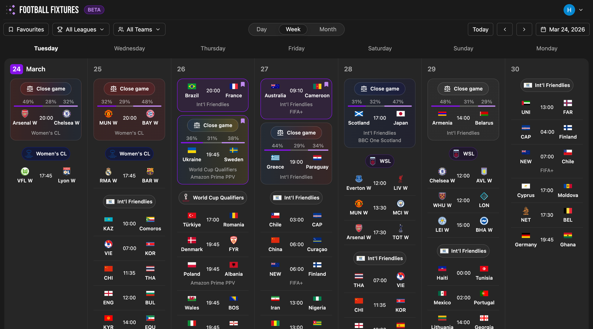
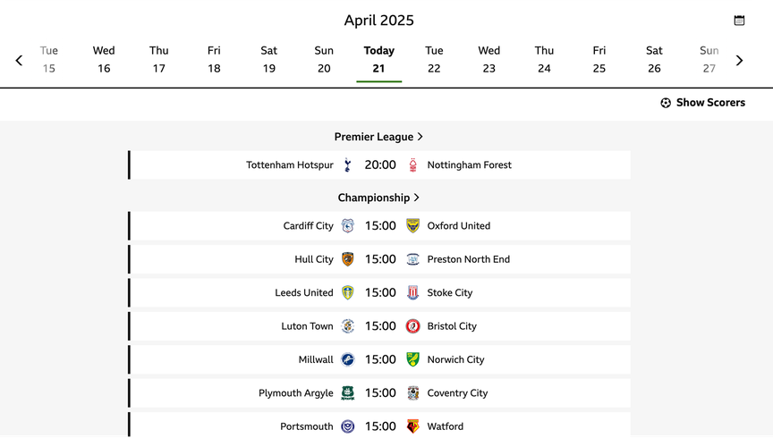
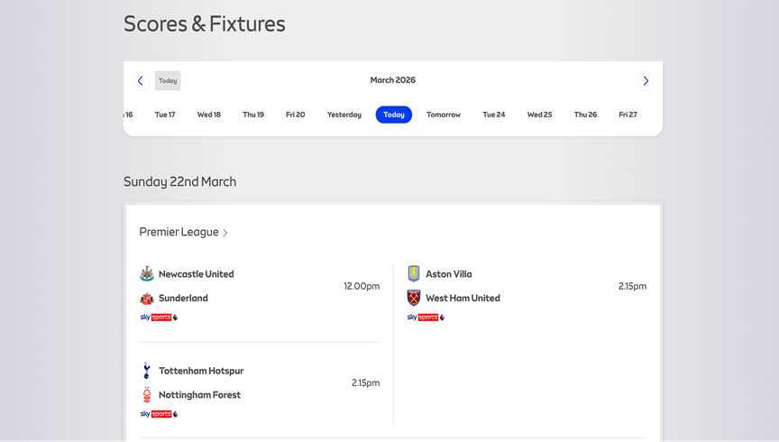
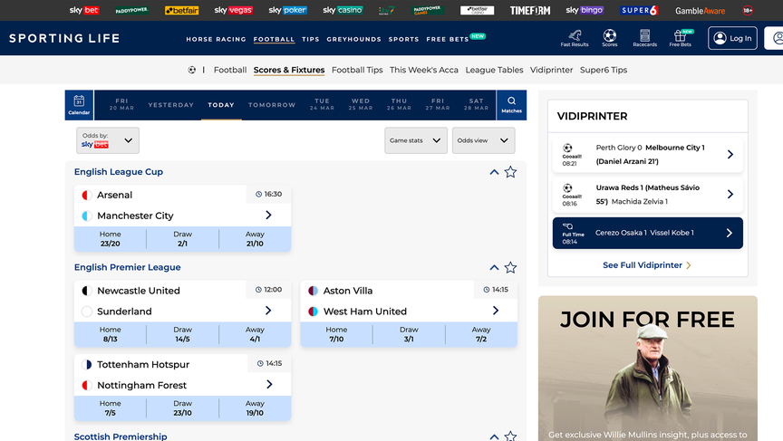
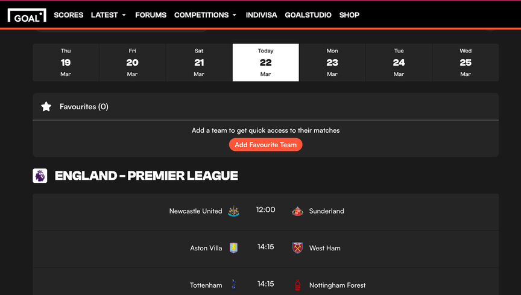
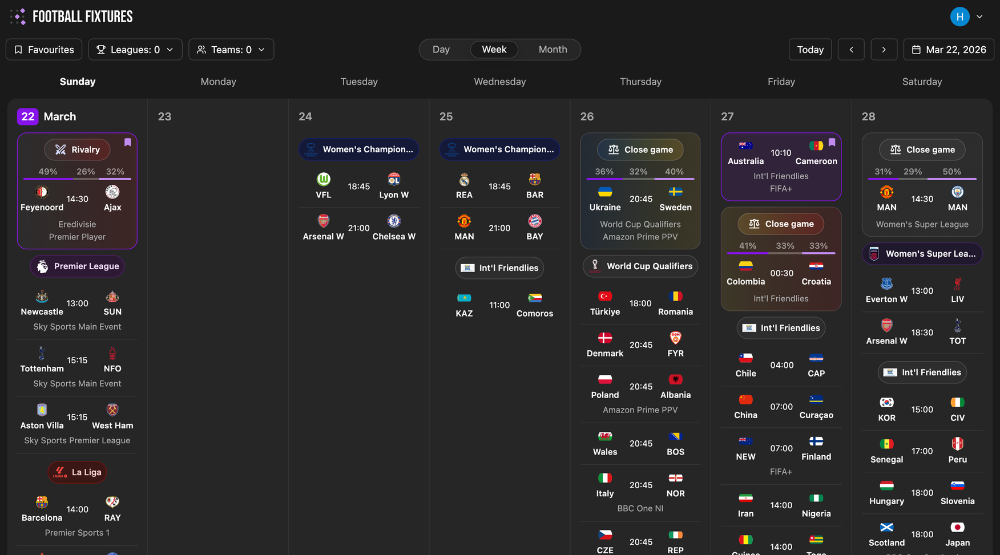
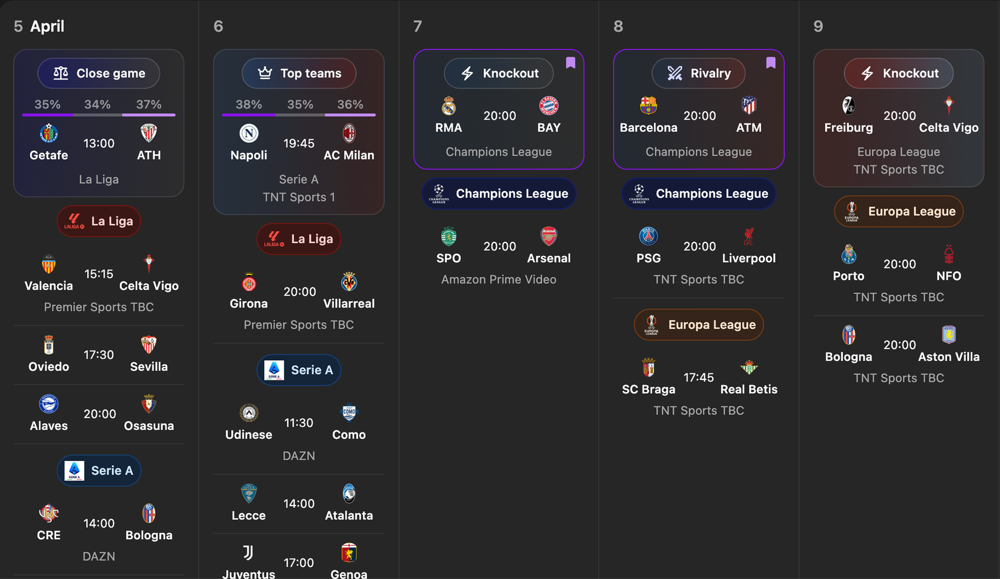

Prototyping with AI tools to help football fans find upcoming games

project stack
Finding the most important upcoming games is difficult
As a football fan there are so many games across Europe that it can be difficult to find the best ones to watch. I wanted to build a website that surfaces important games so fans can plan ahead.
Why current football calendars fail: the day format
Football calendars display games played per day, requiring navigating through the days to find games you want to watch over a longer timeframe. This makes it easy to miss important upcoming games when they aren't surfaced.




Showing games in the week view allows fans to better plan in advance

With limited space, the games shown needed to be as relevant as possible
With limited space, it was essential to maximise the relevancy of the teams that were shown. Teams that had been favourited by the user would appear at the top and users could favourite individual games so they'd also appear at the top.
To surface the most interesting and important games, I created a simple algorithm
With so many games on each day, I needed to be selective in which games were shown at the top. I scored the games on if they were a rivalry, a knockout, top teams or if the odds were close. The top ranking game from each day would be shown at the top as a 'featured game.'

What I learnt from this project
Dealing with UI density
Building with AI
Working on personal projects
A lot of this project revolved around decisions and tradeoffs around space. It was important to have as much information density without sacrificing legibility and scannability. This required making tough decisions around what information was and wasn't included. My workflow constantly evolved throughout this project as I got more used to using AI tools. What I landed on was doing quick mockups in Figma, transferring that to Claude Code and refining it from there. I also had a lot of fun working on something I used myself. Using my own product I built showed me how important getting all of the little details right is.